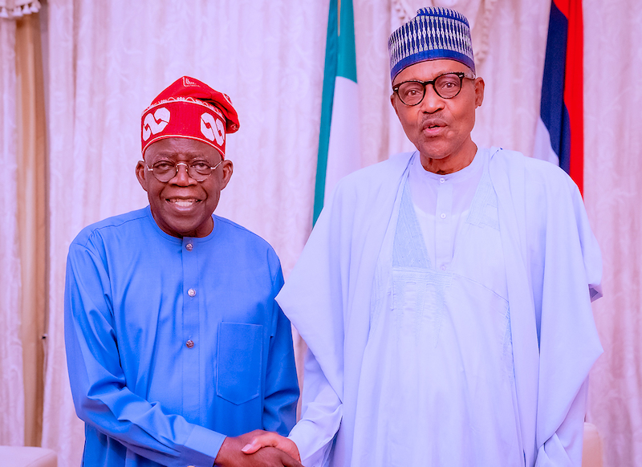

Buhari hosts Tinubu at Aso Rock after clinching presidential ticket.
The President, Major General Muhammadu Buhari (retd.), on Thursday evening, received the new standard-bearer of the All Progressives Congress, Bola Tinubu, at his residence, Aso Rock Villa, Abuja. The meeting came barely 24 hours after the former Lagos State Governor acquired 1,271 votes to clinch the party’s presidential ticket. Tinubu, who was accompanied by Governor Babajide Sanwo-Olu of Lagos State, visited Buhari for the first time since he emerged as the flagbearer.
Earlier, the President had urged the Progressives Governors Forum through its Chairman, Governor Abubakar Bagudu of Kebbi State, to rally around Tinubu to ensure victory in the next year’s election. Buhari made the appeal in a letter addressed to Governor Abubakar Bagudu of Kebbi State and Chairman, Progressives Governor Forum, on Thursday evening. He said, ‘‘I was pleased to see how you were very professional and efficient in handling the sensitive political position of Chairman, Progressives Governors Forum. ‘‘Your commitment in pursuit of equity and fairness speaks volumes in the cooperation displayed by the APC governors. This indeed demonstrates the camaraderie that brought us together over eight years ago.

‘The party primaries were peacefully conducted, and the delegates have selected the candidate to carry the APC flag in the 2023 Presidential Primary. ‘‘Today, as a patriotic APC member and stakeholder, I trust that you will come together to work with our candidate to win the 2023 elections. ‘‘In the past seven years in government, we have achieved a lot. However, we have a lot more to do. The APC project is far from over and we need all of you to come together to ensure our progressive journey to peace and prosperity is sustained.
‘‘Our candidate, His Excellency, Sen, Asiwaju Bola Ahmed Tinubu, is no stranger to you. He is our friend and brother. We know his commitment, his track record, and his capacity to lead our party to success. So now is the time for all of us to come together and march forward, as we did in 2015, to a convincing APC victory. ‘‘I look forward to working closely with the APC governors to support Sen. Asiwaju Bola Ahmed Tinubu and all our APC candidates to success in 2023. ‘‘While I wish our great party success in the 2023 elections, please accept the assurances of my consideration and personal regards.’’ https://punchng.com/buhari-hosts-tinubu-at-aso-rock-after-clinching-presidential-ticket/